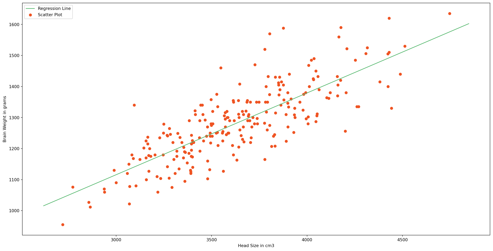

Regression is one of the most common algorithms in machine learning. In this post we will explore this algorithm and we will implement it using Python from scratch.
As the name suggests this algorithm is applicable for Regression problems. Linear Regression is a Linear Model. Which means, we will establish a linear relationship between the input variables(X) and single output variable(Y). When the input(X) is a single variable this model is called Simple Linear Regression and when there are mutiple input variables(X), it is called Multiple Linear Regression. Additionally, non-linear regression seeks to establish a non-linear relationship between the input variable (x) and the output (Y)
Simple Linear Regression
We discussed that Linear Regression is a simple model. Simple Linear Regression is the simplest model in machine learning.
Model Representation
In this problem we have an input variable - X and one output variable - Y. And we want to build linear relationship between these variables. Here the input variable is called Independent Variable and the output variable is called Dependent Variable. We can define this linear relationship as follows:\[Y = \beta_0 + \beta_1 X\]
The \(\beta_1\) is called a scale factor or coefficient and \(\beta_0\) is called bias coefficient. The bias coeffient gives an extra degree of freedom to this model. This equation is similar to the line equation \(y = mx +b\) with \(m = \beta_1\)(Slope) and \(b = \beta_0\)(Intercept). So in this Simple Linear Regression model we want to draw a line between X and Y which estimates the relationship between X and Y.
But how do we find these coefficients? That’s the learning procedure. We can find these using different approaches. One is called Ordinary Least Square Method and other one is called Gradient Descent Approach. We will use Ordinary Least Square Method in Simple Linear Regression and Gradient Descent Approach in Multiple Linear Regression in post.
Ordinary Least Square Method
Earlier in this post we discussed that we are going to approximate the relationship between X and Y to a line. Let’s say we have few inputs and outputs. And we plot these scatter points in 2D space, we will get something like the following image.
And you can see a line in the image. That’s what we are going to accomplish. And we want to minimize the error of out model. A good model will always have least error. We can find this line by reducing the error. The error of each point is the distance between line and that point. This is illustrated as follows.
And total error of this model is the sum of all errors of each point. ie.
\[
D = \sum_{i=1}^{m} d_i^2
\]
\(d_i\)Distance between line and ith point.
\(m\)- Total number of points
You might have noticed that we are squaring each of the distances. This is because, some points will be above the line and some points will be below the line. We can minimize the error in the model by minimizing \(D\) And after the mathematics of minimizing \(D_i\), we will get;
We are going to use a dataset containing head size and brain weight of different people. This data set has other features. But, we will not use them in this model.. This dataset is available in this Github Repo. Let’s start off by importing the data.
# Importing Necessary Libraries%matplotlib inlineimport numpy as npimport pandas as pdimport matplotlib.pyplot as pltplt.rcParams['figure.figsize'] = (20.0, 10.0)# Reading Datadata = pd.read_csv('headbrain.csv')print(data.shape)data.head()
(237, 4)
Gender
Age Range
Head Size(cm^3)
Brain Weight(grams)
0
1
1
4512
1530
1
1
1
3738
1297
2
1
1
4261
1335
3
1
1
3777
1282
4
1
1
4177
1590
As you can see there are 237 values in the training set. We will find a linear relationship between Head Size and Brain Weights. So, now we will get these variables.
# Collecting X and YX = data['Head Size(cm^3)'].valuesY = data['Brain Weight(grams)'].values
To find the values �1 and �0, we will need mean of X and Y. We will find these and the coeffients.
# Mean X and Ymean_x = np.mean(X)mean_y = np.mean(Y)# Total number of valuesm =len(X)# Using the formula to calculate b1 and b2numer =0denom =0for i inrange(m): numer += (X[i] - mean_x) * (Y[i] - mean_y) denom += (X[i] - mean_x) **2b1 = numer / denomb0 = mean_y - (b1 * mean_x)# Print coefficientsprint(b1, b0)
# Plotting Values and Regression Linemax_x = np.max(X) +100min_x = np.min(X) -100# Calculating line values x and yx = np.linspace(min_x, max_x, 1000)y = b0 + b1 * x# Ploting Lineplt.plot(x, y, color='#58b970', label='Regression Line')# Ploting Scatter Pointsplt.scatter(X, Y, c='#ef5423', label='Scatter Plot')plt.xlabel('Head Size in cm3')plt.ylabel('Brain Weight in grams')plt.legend()plt.show()

his model is not so bad. But we need to find how good is our model. There are many methods to evaluate models. We will use Root Mean Squared Error and Coefficient of Determination(�2 Score).
Root Mean Squared Error is the square root of sum of all errors divided by number of values, or Mathematically,
Now we will find �2 score. �2 is defined as follows,
\[
SS_t = \sum_{i=1}^{m} (y_i - \bar{y})^2
\]
\[
SS_r = \sum_{i=1}^{m} (y_i - \hat{y_i})^2
\]
\[
SS_r = \sum_{i=1}^{m} (y_i - \hat{y_i})^2
\]
��� is the total sum of squares and ��� is the total sum of squares of residuals.
�2 Score usually range from 0 to 1. It will also become negative if the model is completely wrong. Now we will find �2 Score.
0.64 is not so bad. Now we have implemented Simple Linear Regression Model using Ordinary Least Square Method. Now we will see how to implement the same model using a Machine Learning Library called scikit-learn
The scikit-learn approach
scikit-learn is simple machine learning library in Python. Building Machine Learning models are very easy using scikit-learn. Let’s see how we can build this Simple Linear Regression Model using scikit-learn.
from sklearn.linear_model import LinearRegressionfrom sklearn.metrics import mean_squared_error# Cannot use Rank 1 matrix in scikit learnX = X.reshape((m, 1))# Creating Modelreg = LinearRegression()# Fitting training datareg = reg.fit(X, Y)# Y PredictionY_pred = reg.predict(X)# Calculating RMSE and R2 Scoremse = mean_squared_error(Y, Y_pred)rmse = np.sqrt(mse)r2_score = reg.score(X, Y)print(np.sqrt(mse))print(r2_score)
72.1206213783709
0.639311719957
You can see that this exactly equal to model we built from scratch, but simpler and less code.
Now we will move on to Multiple Linear Regression.
Multiple Linear Regression
Multiple Linear Regression is a type of Linear Regression when the input has multiple features(variables).
Model Representation
Similar to Simple Linear Regression, we have input variable(X) and output variable(Y). But the input variable has � features. Therefore, we can represent this linear model as follows;
\[
X = \begin{bmatrix}x_0\\x_1\\x_2\\.\\.\\x_n\end{bmatrix}
\]
We have to define the cost of the model. Cost bascially gives the error in our model. Y in above equation is the our hypothesis(approximation). We are going to define it as our hypothesis function.
This is the procedure. Here � is the learning rate. This operation \(\frac{\partial}{\partial \beta_j} J(\beta)\) means we are finding partial derivate of cost with respect to each ��. This is called Gradient.
Read this if you are unfamiliar with partial derivatives.
In step 2 we are changing the values of �� in a direction in which it reduces our cost function. And Gradient gives the direction in which we want to move. Finally we will reach the minima of our cost function. But we don’t want to change values of �� drastically, because we might miss the minima. That’s why we need learning rate.
The above animation illustrates the Gradient Descent method.
But we still didn’t find the value of �����(�). After we applying the mathematics. The step 2 becomes.
We iteratively change values of �� according to above equation. This particular method is called Batch Gradient Descent.
Implementation
Let’s try to implement this in Python. This looks like a long procedure. But the implementation is comparitively easy since we will vectorize all the equations. If you are unfamiliar with vectorization, read this post
We will be using a student score dataset. In this particular dataset, we have math, reading and writing exam scores of 1000 students. We will try to find a predict the score of writing exam from math and reading scores. You can get this dataset from this Github Repo. That’s we have 2 features(input variables). Let’s start by importing our dataset.
%matplotlib inlineimport numpy as npimport pandas as pdimport matplotlib.pyplot as pltplt.rcParams['figure.figsize'] = (20.0, 10.0)from mpl_toolkits.mplot3d import Axes3Ddata = pd.read_csv('student.csv')print(data.shape)data.head()
(1000, 3)
Math
Reading
Writing
0
48
68
63
1
62
81
72
2
79
80
78
3
76
83
79
4
59
64
62
We will get scores to an array.
math = data['Math'].valuesread = data['Reading'].valueswrite = data['Writing'].values# Ploting the scores as scatter plotfig = plt.figure()ax = Axes3D(fig)ax.scatter(math, read, write, color='#ef1234')plt.show()
def gradient_descent(X, Y, B, alpha, iterations): cost_history = [0] * iterations m =len(Y)for iteration inrange(iterations):# Hypothesis Values h = X.dot(B)# Difference b/w Hypothesis and Actual Y loss = h - Y# Gradient Calculation gradient = X.T.dot(loss) / m# Changing Values of B using Gradient B = B - alpha * gradient# New Cost Value cost = cost_function(X, Y, B) cost_history[iteration] = costreturn B, cost_history
Now we will compute final value of \(\beta\)
# 100000 IterationsnewB, cost_history = gradient_descent(X, Y, B, alpha, 100000)# New Values of Bprint(newB)# Final Cost of new Bprint(cost_history[-1])